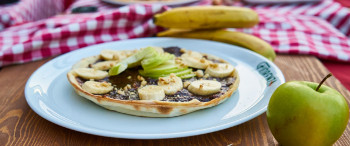

BananenheuschreckenRennen
Fitness Kochrezepte vom Heuschreckenblog, die euch fit ins Rennen bringen.

Drinks fürs Rennen
Für Läufer, die unaufhaltbar bleiben wollen.

Heuschrecken Gerichte
Für Sportler, die auf ihre Ernährung achten.
Das Laufen im Fokus
Die Frage nach der richtigen Kohlenhydrat Fett- und Eiweißmenge, ist unter Sportlern weit verbreitet. Jedoch sind bestimmte Arten von Diäten zur Leistungssteigerung oft für (Freizeit-) Läufer weniger empfehlenswert.
Ihr möchtet stattdessen wissen, wie ihr durch ausgewogene Ernährung eure Leistung steigern und euren Körper schonen könnt?
Ganz einfach: Ihr benötigt dazu keinerlei ausgefallenen Schnickschnack. Das wichtigste ist nur dieser eine Hauptbestandteil: eine Banane!
Wir zeigen euch wie ihr mit Bananen und anderen herkömmlichen Lebensmitteln garantiert im Rennen bleibt!
Heuschrecken
Wir konnten es zuerst auch nicht glauben, aber es gibt ein Heuschrecken Pulver! Mit dem Heuschrecken Pulver lassen sich verschiedene Leckereien zaubern, ganz wie mit herkömmlichen Protein Pulver.
Zum Beispiel:
- Heuschrecken Energie Riegel
- Heuschrecken Burger Patties
- Heuschrecken Reis mit Bohnen
- Heuschrecken Pfannkuchen
Es besteht aus 100% puren Heuschrecken. Wir haben das Heuschrecken Pulver auf Amazon gekauft
Unser Geheimtipp:
Falls ihr noch mehr Infos zu Spezialitäten aus
Heuschrecken möchtet, seid ihr bei Cricket Flours Gold richtig.
Rennen
Apropo Gold, wer von uns würde nicht gerne Gold als Läufer holen? Um im Rennen richtig zu punkten haben wir für euch ein paar exklusive Tipps vorbereitet:
- Richtige Ernährung:
Eine richtige Ernährung spielt im Sport eine überaus wichtige Rolle. Der Körper braucht alle Ressourcen um aufs Rennen hervorragend vorbereitet zu sein. Gönn deinem Körper nur das Beste! Schaut doch am besten mal bei unseren leckereren Bananen Rezepten rein! - Mentale Vorbereitung:
Jeder Profi im Rennen weiß: nur wer mit positiven Mindset in einem Wettkampf antritt, ist ein ernst zu nehmender Läufer/ Rennradfahrer.
Bereite dich schon Wochen vor dem Marathon oder dem Lauf auf das Rennen vor und nutze ggf. diese Renntaktik der Radprofis (auch für Läufer gültig).
Bananen
Warum wir nicht mehr auf Bananen verzichten können.
Bei der Auswahl unserer Sportrezepte haben wir uns bewusst dazu entschieden, Bananen in den Mittelpunkt zu stellen.
Bananen sind Sportlernahrung Nummer 1, das steht fest. - Aber warum
ist das so?
Euer Heuschrecken Blog liefert 4 Gründe, warum Bananen die Nahrung für dein nächstes Rennen sind:
-
Energielieferant
Eine große Banane punktet mit 240 Kilokalorien. Sie enthält drei natürliche Zucker: Saccharose, Glucose und Fruktose.
-
Allrounder
Als Kohlenhydratspeicher liefert die Banane gerade Ausdauersportlern lange Energie ohne damit den Magen mit Ballaststoffen zu beschäftigen.
Außerdem enthalten Bananen wichtige Mineralstoffe, die gerade im Ausdauersprot unverzichtbar sind. Aber icht nur auf die richtige Sporternährung kommt es an, sondern vor allem auch um eine ausreichende Wasserversorgung. „Genügend trinken“ heißt es. Unsere Läufer bekommen von unserem beliebten Bananen Wasser gar nicht genug.
-
Heilmittel
Bananen sollen Bluthochdruck vorbeugen. Da sie viel Kalium enthält und gleichzeitig wenig Salze enthält, hilft sie ideal.
- Begleiter in der Diät
Je nach dem, ob man kurz vor einem Wettkampf oder einem Rennen steht, kann die Banane mit unterschiedlichen Reifegrad dem Ernährungsplan angepasst werden. Braucht ihr viele Kohlenhydrate, dann lasst die Banane noch reifen. Umso reifer sie ist, umso mehr Kohlenhydrate enthält sie.
Über uns Heuschrecken
Was hat es mit diesem Heuschrecken Blog auf sich?
Unser Maskottchen ist die Heuschrecke. Heuschrecken springen weit und bringen eine hohe Ausdauer mit sich.
Kraftvoll, anmutig und mit großen Sprüngen bringen wir euch wie die Heuschrecken
ins Rennen.
Auf diesem Blog findet ihr Sportrezepte für Läufer, Rennradfahrer und alle anderen Sportbegeisterten. Bei unseren Heuschrecken Rezepten stehen vor allem Bananen im Mittelpunkt.
Aber warum Bananen?
Warum wir finden, dass ausgerechnet Bananen die beste Grundlage für alle Gerichte im Ausdauersport sind erfahrt ihr in unserem Bananen Beitrag.
Andere Heuschrecken Blogs
www.heuschrecken-rennen.de
Ihr wollt noch andere Heuschrecken wie uns kennen lernen? Dann seit ihr hier richtig !
www.heuschrecken-rennen.de
Desserts
Kann man Sport und ausgewogene Ernährung in Einklang mit Desserts bringen? Wir sagen Ja!
Denn nach einem erfolgreichen Lauf hat jeder sich mal etwas zum Naschen verdient.
Schaut euch unsere Bananen Dessert Rezepte an und gönnt euch eine Pause nach einem anstrengenden Training - ohne dabei ein schlechtes Gewissen zu haben.
Diese bananigen Verführungen dürft ihr euch einfach nicht entgehen lassen!
Zu den Desserts
Getränke
Saufen ohne Kater? Als Sportler ist jederzeit wichtig, den Körper mit ausreichend Flüssigkeit zu versorgen.
Kommt es zum Thema ausgewogene Ernährung sagen uns unsere Ärzte immer eines: Viel trinken.
Vor allen Dingen ist dies der Fall, wenn wir zusätzlich viel Sport betreiben.
Damit ist es möglich, nur durch trinken, viele wichtige Nährstoffe dem Körper zu zu führen.
Wir zeigen mit unseren Bananen Getränken wie ihr dies erreicht – damit ihr garantiert im Rennen bleibt!
Zu den Getränken
Speisen
Bananen als Hauptgericht? Aber selbstverständlich.
Wir wissen jetzt, dass die Banane mit vielen Vorteilen punkten kann. Wie bekommen wir diese Köstlichkeit aber auch mittags auf unseren Teller?
Wir haben uns ausgiebig Gedanken dazu gemacht und die ein oder andere Versuchung für euch getestet. Schlemmen mit allen Mineralstoffen, damit ihr fürs Rennen gewappnet seid.
Hier findet ihr unsere Speise Vorschläge, die euch ans Ziel bringen.
Zu den Speisen
Desserts - Überblick
Bananenkuchen
Arbeitszeit ca. 20 Min.
Schwierigkeitsgrad: easy

Bananenmuffins
Arbeitszeit: ca.15 Min.
Schwierigkeitsgrad: easy

Bananensplit
Arbeitszeit: ca. 10 Min.
Schwierigkeitsgrad: easy
Bananenbrot
Zutaten
Dummy
Zubereitung
Dummy
Bananen Muffins
Zutaten
Dummy
Zubereitung
Dummy
Bananen Wasser
Zutaten
Dummy
Zubereitung
Dummy
Getränke - Überblick
Bananen Wasser
Arbeitszeit: 3 Min.
Schwierigkeitsgrad: easy

Banenen Saft
Arbeitszeit: 3 Min.
Schwierigkeitsgrad: easy

Bananen Sorbet Drink
Arbeitszeit: 4 Min.
Schwierigkeitsgrad: easy
Bananen Wasser
Zutaten
1 Banane(n)
2 Äpfel
1 Handvoll Spinat, frischer
300 ml Wasser
1 Schuss Olivenöl
1 Spritzer Zitronensaft
Zubereitung
Die Banane und die Äpfel zerkleinern und in ein Gefäß geben. Spinat und Wasser dazu und alles kräftig pürieren. Das Olivenöl unterrühren und nochmals pürieren.
Je nach Geschmack und Konsistenz etwas Zitronensaft dazugeben und fertig ist "Der Grüne".
Bananen Saft
Zutaten
3 reife Bananen
3 frische Äpfel
1 reife Mango
500 ml Wasser
einen Spritzer Zitronensaft
Zubereitung
Alle Früchte schälen und in kleinere Stücke zerteilen. Alle Zutaten dann ab in den Mixer schmeißen.
Wenn ihr möchtet, könnt ihr ihn noch mit Eiswürfeln oder Minzblättern garnieren. Fertig ist unser erfrischender Bananen Saft!
Bananen Wasser
Zutaten
1 Banane(n)
2 Äpfel
1 Handvoll Spinat, frischer
300 ml Wasser
1 Schuss Olivenöl
1 Spritzer Zitronensaft
Zubereitung
Dummy
Speisen - Überblick

Bananenbrot
Arbeitszeit ca. 20 Min.
Schwierigkeitsgrad: easy

Bananenpizza
Arbeitszeit: ca.15 Min.
Schwierigkeitsgrad: easy

Frühstücksbowl
Arbeitszeit: 5 Min.
Schwierigkeitsgrad: easy
Zutaten
3 Banane(n) sehr reif, je dunkler, desto besser, etwa 300 g
200 g Vollkornmehl,ich nehme Weizenvollkornmehl, alternativ geht auch Roggenmehl, Weißmehl, Dinkelmehl.. Zimt, ich nehme 1 TL voll
100 g Apfel, gerieben oder Apfelmus ohne Zucker
1 Pck. Backpulver
2 Ei(er)
50 g Walnüsse, gehackt, alternativ Mandeln, Haselnüsse...
Zubereitung
Den Apfel schälen, entkernen und fein reiben (alternativ kann man auch Apfelmus nehmen, dem kein Zucker zugesetzt wurde), die Bananen gut zerdrücken. Nun mit den zwei Eiern schaumig schlagen. Mehl, Backpulver und Zimt mischen, zum Bananen-Apfel-Ei-Brei geben und kurz, aber gut verrühren. Zum Schluss die gehackten Walnüsse unterheben und alles in eine Kastenform füllen, je größer die Form, desto flacher das Brot. Nun bei 180°C etwa 45 Minuten backen (Stäbchenprobe!).
Das Brot geht im Ofen gut hoch, fällt aber beim Abkühlen wieder etwas zusammen (so wie z. B. Käsekuchen). Der Teig bleibt eher "schlonzig", also kompakter als z. B. Kuchenteig. Vor dem Anschneiden unbedingt gut auskühlen lassen!
So gebacken hat bei 12 Stücken eines ca. 127 kcal. Das gesamte Brot hat dann also ca. 1524 kcal.
In einer Dose hält das Brot ca. eine Woche und schmeckt durchgezogen meiner Meinung nach sogar noch etwas besser als frisch. Auch Einfrieren klappt sehr gut. Wer's lauwarm mag, kann die Scheiben vor dem Verzehr einfach nochmal kurz in die Mikrowelle geben.
Varianten: Man kann den Teig auch in einer Springform oder in einem Muffinblech backen (Backzeiten evtl. etwas anpassen) und als Kuchen genießen, wenn der Teig nicht süß genug ist, kann man z. B. mit Honig oder Sirup nachhelfen. Auch lässt sich das Brot nach dem Auskühlen nach Belieben z. B. mit Kuvertüre überziehen, dann hat es noch mehr Kuchencharakter. Schokostückchen im Teig passen auch sehr gut, dann ist es allerdings natürlich weniger gesund.
Wer lieber mit Fett backt, kann den Apfel, der ersetzt nämlich hier das Fett, durch 60 ml Öl oder 80 g Butter ersetzten.
Aufgrund seiner Zusammensetzung eignet sich das Brot prima als Geburtstagskuchen für Kleinkinder oder als Snack für unterwegs, da kein zusätzliches Fett und kein extra Zucker in den Teig kommt und das Brot damit sehr nahrhaft, aber auch sehr lecker wird.
Ich backe es meistens nach Rezept und esse es lauwarm mit einer dünnen Schicht Schokocreme.
Bananen Pizza
Zutaten
500 g Dinkelmehl
1 Hefe Würfel
300 ml Wasser
3 EL Sonnenblumenöl
200 g Nuss-Nougat Creme
1 grünen Apfel
1 reife Banane
2 EL Agavendicksaft
2 TL Mandeln gehackt
Zubereitung
Mehl, Hefe und Wasser und Sonnenblumenöl vermischen, den Teig fü eine halbe Stunde ruhen lassen.
In der Zeit den Apfel kleinschneiden und die Mandeln mit dem Agavendicksaft in einer Pfanne karamelisieren.
Den Teig glatt ausrollen und mit der Nuss-Nougat Creme bestreichen. Apfel- und Bananensücke darauflegen und mit Mandeln garnieren, fertig!
Dummy
Zutaten
Dummy
Zubereitung
Dummy